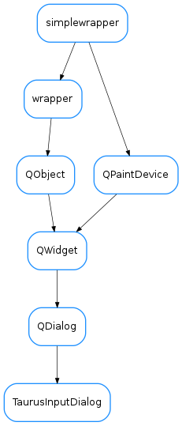

TaurusInputDialog¶

-
class
TaurusInputDialog(input_data=None, parent=None, input_panel_klass=None, designMode=False)[source]¶ Bases:
PyQt4.QtGui.QDialogThe TaurusInputDialog class provides a simple convenience dialog to get a single value from the user.
-
panel()[source]¶ Returns the
taurus.qt.qtgui.panel.TaurusInputPanel.Returns: the internal panel Return type: taurus.qt.qtgui.panel.TaurusInputPanel
-